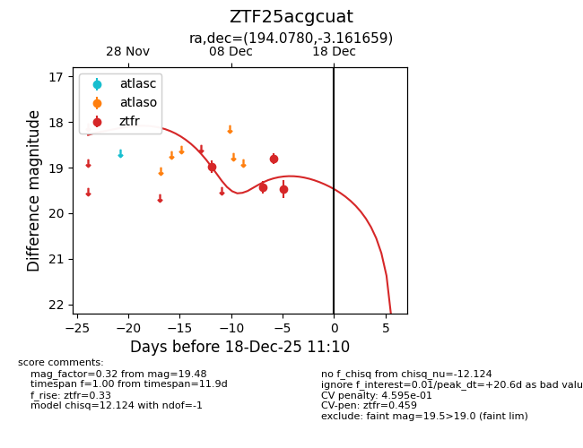
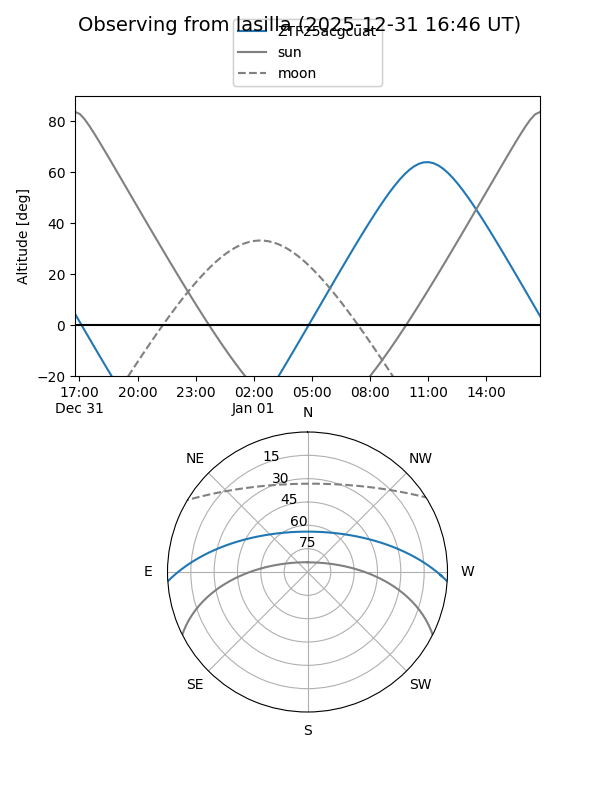
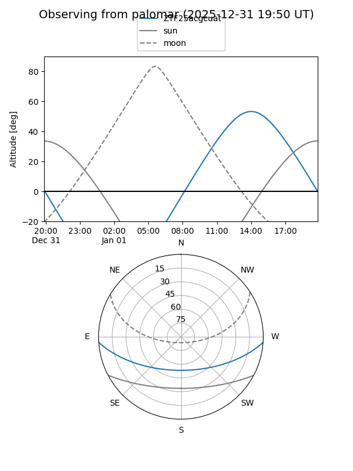

ZTF25acgcuat
Target ZTF25acgcuat at 2025-12-18 11:18
Aliases and brokers:
FINK: fink-portal.org/ZTF25acgcuat
Lasair: lasair-ztf.lsst.ac.uk/objects/ZTF25acgcuat
ALeRCE: alerce.online/object/ZTF25acgcuat
alt names
ZTF25acgcuat (ztf,fink_ztf)
Coordinates:
equatorial (ra, dec) = 194.0780,-3.16166
equatorial (HMS+DMS) = 12:56:18.73,-03:09:41.97
galactic (l, b) = (305.3431,+59.68727)
Photometry
last ztfr=19.48
4 ztfr detections
Lightcurve

Visibility


Additional plots